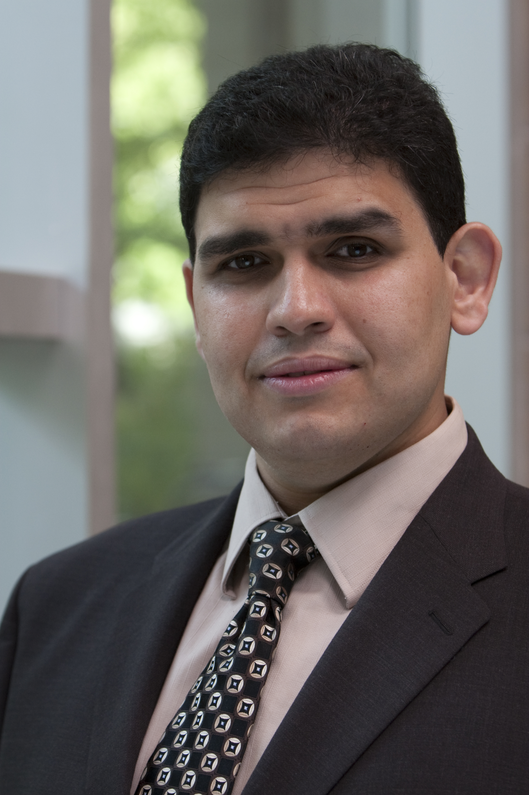

Online registration is now open: http://www.scs.ryerson.ca/eseiw2017/registration.html
PROMISE is an annual forum for researchers and practitioners to present, discuss and exchange ideas, results, expertise and experiences in construction and/or application of predictive models and data analytics in software engineering. Such models and analyses could be targeted at: planning, design, implementation, testing, maintenance, quality assurance, evaluation, process improvement, management, decision making, and risk assessment in software and systems development. PROMISE encourages researchers to publicly share their data in order to provide interdisciplinary research between the software engineering and data mining communities, and seek for verifiable and repeatable experiments that are useful in practice.
Program
Keynote: "Are we drinking too much Big Data and Machine Learning Kool-Aid?!" by Prof. Ahmed E. Hassan, Queen's University, Canada
|  | Abstract: Is it always better to add more projects to our studies? Should we be using the fanciest Machine Learning (ML) techniques? With the ease of access to data about large projects (e.g., PROMISE and MSR Data Showcase), and the ease of access to advanced ML toolkits (e.g., R, Weka, and Scikit-learn), we are seeing more and more papers going for bigger and fancier (with reviewers quite often demanding so). In this talk, I will take a critical look at how bigger and fancier often leads to way less! I will discuss how such a blind rush to using as much data, and as fancy ML as possible is quite often risking the validity of our empirical findings, even when combined with careful qualitative analysis of some of the studied projects Throughout the talk, I will provide concrete examples of such risks while proposing best practices that the software analytics community needs to follow to avoid such risks. Bio: Ahmed E. Hassan is the Canada Research Chair (CRC) in Software Analytics, and the NSERC/BlackBerry Software Engineering Chair at the School of Computing at Queen's University, Canada. Dr. Hassan serves on the editorial boards of the IEEE Transactions on Software Engineering, Springer Journal of Empirical Software Engineering, and PeerJ Computer Science. He spearheaded the organization and creation of the Mining Software Repositories (MSR) conference and its research community. Early tools and techniques developed by Dr. Hassan's team are already integrated into products used by millions of users worldwide. Dr. Hassan industrial experience includes helping architect the Blackberry wireless platform, and working for IBM Research at the Almaden Research Lab and the Computer Research Lab at Nortel Networks. Dr. Hassan is the named inventor of patents at several jurisdictions around the world including the United States, Europe, India, Canada, and Japan. More information at: http://sail.cs.queensu.ca/ |
Topics of Interest
Topics of interest include, but are not limited to:Application oriented:
- predicting for cost, effort, quality, defects, business value;
- quantification and prediction of other intermediate or final properties of interest in software development regarding people, process or product aspects;
- using predictive models and data analytics in different settings, e.g. lean/agile, waterfall, distributed, community-based software development;
- dealing with changing environments in software engineering tasks;
- dealing with multiple-objectives in software engineering tasks;
- using predictive models and software data analytics in policy and decision-making.
Theory oriented:
- model construction, evaluation, sharing and reusability;
- interdisciplinary and novel approaches to predictive modelling and data analytics that contribute to the theoretical body of knowledge in software engineering;
- verifying/refuting/challenging previous theory and results;
- combinations of predictive models and search-based software engineering;
- the effectiveness of human experts vs. automated models in predictions.
Data oriented:
- data quality, sharing, and privacy;
- ethical issues related to data collection;
- metrics;
- tools and frameworks to support researchers and practitioners to collect data and construct models to share/repeat experiments and results.
Validity oriented:
- replication and repeatability of previous work using predictive modelling in software engineering;
- assessment of measurement metrics for reporting the performance of predictive models;
- evaluation of predictive models with industrial collaborators;
Important Dates
- Abstract submission:
612 June 2017 - Paper submission:
1219 June 2017 - Notification of acceptance: 21 July 2017
- Conference date: 8 November 2017
Journal Special Issue
- Following the conference, the authors of the best papers will be invited for consideration in a special issue of the Empirical Software Engineering journal by Springer.

Keynote
- Prof. Ahmed E. Hassan, Queen's University
Kinds of Papers
We invite all kinds of empirical studies on the topics of interest (e.g. case studies, meta-analysis, replications, experiments, simulations, surveys etc.), as well as industrial experience reports detailing the application of predictive modelling and data analytics in industrial settings. Both positive and negative results are welcome, though negative results should still be based on rigorous research and provide details on lessons learned. It is encouraged, but not mandatory, that conference attendees contribute the data used in their analysis on-line. Submissions can be of the following kinds:
- Full papers (oral presentation, 10 pages): papers with novel and complete results.
- Short papers (oral presentation, 4 pages): papers to disseminate on-going work and preliminary results for early feedback, or vision papers about the future of predictive modelling and data analytics in software engineering.
Submissions
PROMISE 2017 submissions must meet the following criteria:- be original work, not published or under review elsewhere.
- conform to the ACM SIG proceedings template
- not exceed 10 (4) pages for full (short) papers including references.
- follow a structured abstract with the headings: Background, Aims, Method, Results, and Conclusions.
- written in English;
- Papers should be submitted via EasyChair (please choose the paper category appropriately):
Programme Committee
- Lefteris Angelis
- Gabriele Bavota
- Massimiliano Di Penta
- Tracy Hall
- Rachel Harrison
- Jacky Keung
- Hoa Khan
- Foutse Khomh
- Ekrem Kocaguneli
- Gernot Liebche
- Chris Lokan
- Lech Madeyski
- Shane Mcintosh
- Emilia Mendes
- Tim Menzies
- Leandro Minku
- Jaechang Nam
- Rudolf Ramler
- Daniel Rodriguez
- Federica Sarro
- Martin Shepperd
- Ayse Tosun
- Stefan Wagner
- Hironori Washizaki
- Dietmar Winkler
- Xin Xia
- Yang Ye
- Yuming Zhou
Steering Committee
- Leandro Minku, University of Leicester
- Andriy Miranskyy, Ryerson University
- Massimiliano Di Penta, University of Sannio
- Burak Turhan, Brunel University
- Hongyu Zhang, University of Newcastle
General Chair
- Burak Turhan, Brunel University
PC Co-Chairs
- David Bowes, University of Hertfordshire
- Emad Shihab, Concordia University
Publication Chair
- David Bowes, University of Hertfordshire
Publicity and Social Media Chair
- Federica Sarro, University College London
Local Organization Chair
- Andriy Miranskyy, Ryerson University